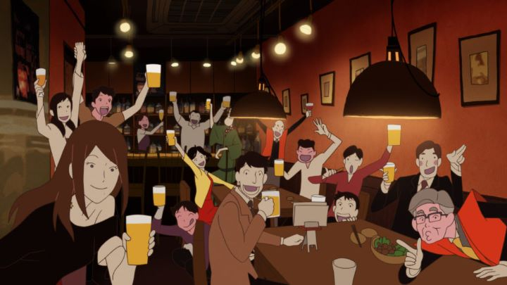

Masaaki Yuasa is a unique visionary in the animation world for his frantic visual style and Tex Avery-sense of humor. Despite being not mainstream in the slightest, he was able to amass a dedicated fanbase slowly as he directed a new piece. Typically, he might have had opportunities to direct every two years or so, until he was able to co-start a new studio called "Science Saru" in 2014. From there, he directed not one, but two feature films, to be released in the same year, barely a month apart in theaters across Japan. This was a special treat as he hadn't directed a feature ( since 2004's "Mind Game," a critically acclaimed experiment that didn't receive any compatible home-video release in the USA until over a decade later due to rampant piracy. Yes, it was THAT good that people had to see it by any means necessary.Of the two films (family-focused "Lu Over The Wall" and comedy-of-errors "The Night Is Short, Walk On Girl"), "Walk On Girl" is the one that most evokes the style fans of Yuasa would recognize. This is in part because much of the animation staff was said to be taken from cult-favorite television series "The Tatami Galaxy" (again, a show that never properly released in the western world). The stylized and elegant character designs immediately stand out in the promotional trailers. True to Yuasa, many characters of varied designs would appear in promotional footage, and the exact story structure left vague for you to see for yourself. For that reason, it is hard to know what to expect from "Walk On Girl," less be spoiled by any story surprises.So what exactly is the story about? Nameless character "Sempai" has a crush on younger teenager he only refers to as "The Girl with the Black Hair," so named because he naturally doesn't know her name and only has the courage to see her from afar. Slowly, he has set up meticulous scenarios where he would happen to be at the same locations as she was "by chance," be it at a store or restaurant or at school. This plan would allow him to make his move, tonight, now that he made his presence known to her subconciously, finally giving him the courage to ask her out, knowing she would see him as a true love of fate. At least, this is the plan as he explains to his friends in the opening minutes: a cross-dressing student council leader and a man driven by love to not wash his underwear for a unknown amount of time. Much of the film relies on the incredible and unusual side characters, from elderly adults past their prime, to gods, to perverted purveyors of erotic wood-block prints, and many others. The city itself is a character, alive and vibrant from the street shops to the bars to the campus of a school festival. But more than anything, and a surprise to me, "The Girl" is clearly the main character of the story, and "Sempai" is merely a coincidential chaarcter in the background. The Girl has her own plans for the evening unaware of Sempai's intentions. This starts by enjoying the nightlife's alchohol scene (despite barely being of drinking age in most countries, she puts away wine like water into a lake), but the story expands to four distinct acts; a drinking adventure, a quest among a used-book market, a impromtu student musical, and a nasty cold that affects the entire town. The film in fact could have been cleanly divided into television-sized episodes, but I'm glad they didn't. The acts flow well into each other, some characters carrying over and some disappearing, all with The Girl at the center.  And an extremely likable character she is! In contrast to those around her, she always looks on the bright side of life, taking on any challenge with passion, and taking control to ensure she has a good time, a role model for young cartoon women everywhere. Much of this is at Sempai's horror, as his plans go awry either because of the opportunities he misses, or because of unforseen interruptions that take him away elsewhere. Slapstick comedy doesn't exist like this anymore, and its hard to decide if it ever had. If you like Tex Avery cartoons, musicals, and quick jokes around drinking and questioning sexuality, this will prove to be a riot. For some of these reasons, it is best experienced by adults who themselves might be able to experience drinking and sexuality to fully appreciate the humor, although there isn't any extreme violence or nudity that would prevent young children from entering the theater. The writing owes much to screenwriter Makoto Ueda (one of the team from "The Tatami Galaxy") and the original novel by Tomihiko Morimi (also the orignal writer that inspired "The Tatami Galaxy"). It is a modern fairy tale for adults.Did I mention the visuals yet? "Walk On Girl" and "Lu Over The Wall" were both animated using Flash, a apparent favorite tool of the director. When one thinks of Flash, immediately they might think of crude online animations made popular with modern generations for their lack of refinement and overuse of smooth "tweening." While "Lu" was a bit too obvious at times, "Walk On Girl" certainly isn't. Character animation is at the type of framerate most are used to, and any software-specific shortcuts Flash provides is used primarily for fluids and for camera movement. While there isn't much animation on display in this particular film (the story really doesn't call for it), the art style is striking and impressionable. The music and acting (Japanese) is also excellent, perhaps more of a standout for the lengthy musical sequence in the middle of the movie. If Yuasa ever does direct a full musical, be assured I will be first in line.The film is not properly released in North America at the time of this writing (and by all that is sacred, it better not be lost like so much of this artist's genius!), but I had the opportunity to watch it at the Ottawa International Animation Festival with a packed crowd. The audience perhaps was drinking, and was just a little rowdy, but there isn't a better film to be in such a state. Everyone howled with laughter at the gags, marveled at the mad animation, and had an overall grand time. Truely, if given the opportunity, do see this with friends. It is no wonder that both "Walk On Girl" and "Lu Over The Wall" would win awards in 2017 from the animation community - I haven't had this much fun in a long time.It is hard to ignore the genius of "Walk On Girl," which will surely be a cult classic worthy as a successor to "Mind Game." The only thing I can imagine changing is the ending, which likely isn't a spoiler: "Sempai" and "The Girl with the Black Hair" are about to meet at a coffee shop on their first proper date. Before they meet, they each consider the manic night that occurred prior, and claim how their new relationship surely must have been the work of fate. Had I the opportunity, I would have had one of the many side characters peering at them through the window, exclaiming in their mind what the entire audience watching would have thought in response: "bullshit!"
- "Ani" More reviews can be found at : https://2danicritic.github.io/ Previous review: review_The_Mystic_Archives_of_Dantalian Next review: review_The_Pet_Girl_of_Sakurasou